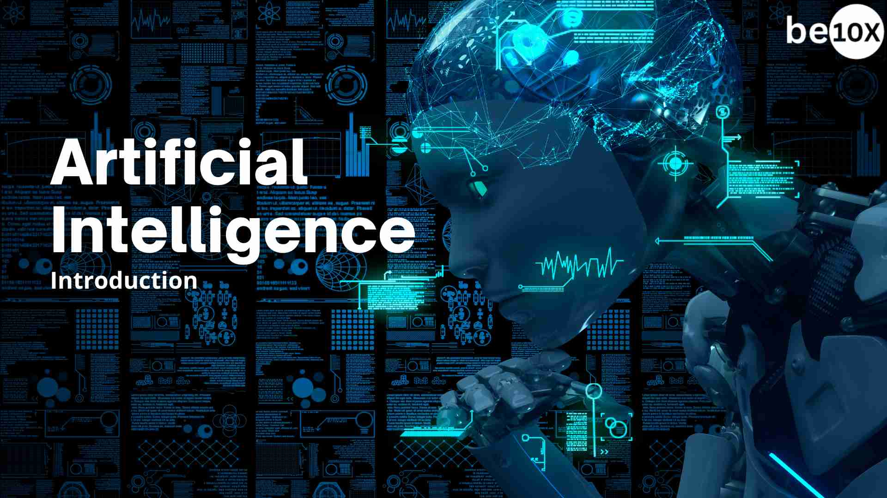

Introduction
Artificial Intelligence (AI) is the simulation of human intelligence in machines to enable them to learn, reason, and solve problems. AI systems analyze vast amounts of data to identify patterns, make decisions, and perform tasks that typically require human cognitive functions like language processing, vision, and problem-solving.
Main Content
Artificial intelligence (AI) models are trained computer programs that learn from data to recognize patterns, make predictions, and perform specific tasks without direct human instruction. These models use algorithms to find relationships in datasets, enabling them to perform tasks like natural language processing, image recognition, and forecasting.There are several AI tools are there.
- ChatGPT
It is a powerful artificial intelligence (AI) chatbot developed by OpenAI that uses large language models to generate human-like text and engage in natural conversations with users. Released in November 2022, it employs GPT (Generative Pre-trained Transformer) technology to process user prompts and produce responses, and it can perform various tasks such as writing, coding, answering questions, and even generating images. Users interact with ChatGPT through text and audio prompts - Gemini
It is Google's family of advanced, multimodal AI models designed to understand and process various types of input, including text, images, audio, and video, to provide versatile and context-aware responses. It powers the Gemini chatbot (formerly Bard), serves as an AI assistant within Google Workspace for tasks like email drafting and research, and acts as the default AI assistant on new Google Pixel phones. - Perplexity
It is an AI-powered conversational search engine that provides synthesized answers to queries by referencing multiple web sources, including inline citations. It uses large language models (LLMs) to offer up-to-date information and offers a free version with basic features and a paid Pro subscription for advanced capabilities, such as analyzing larger files and using more powerful models. - Copilot
It is a suite of AI-powered digital assistants from Microsoft designed to boost productivity, automate tasks, and provide creative assistance across various applications and platforms. It functions as a conversational interface, allowing users to interact with it through natural language prompts to generate text, images, code, and data analysis, drawing from both the internet and private organizational data. Examples include the standalone Microsoft Copilot for general use, Microsoft 365 Copilot for integrating into work applications like Word and Outlook, and specialized versions like GitHub Copilot for coding.
Conclusion
In the End,All these AI is about to help the humans but it shouldn't be more than a humans intelligence.AI is shaping the future of how we work, learn, and interact with technology. As tools become more advanced, they will continue to play a major role in our daily lives, helping us solve problems and boosting productivity.
Wanna Read more...Click the Link below
Read more